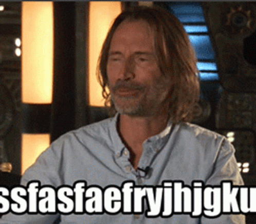
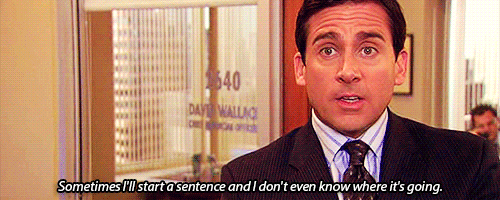

Mastering Monotony: 10 Techniques for Uninteresting Presentations
This article provides 10 actionable tips to elicit boredom in your presentations.

Introduction
Are your presentations drawing too much interest? Do people hang on to your every word, eagerly awaiting your next point? Do you find audience members nodding in agreement or even chuckling at your jokes? If that’s the case, your presentations might be a little too interesting! Don’t worry though, I got you covered. This guide will help you make your presentations less interesting and more forgettable. The article takes you on a journey to learn the secrets of a dull presentation, breaking all the rules of good storytelling and engaging conversations.
1. The more information the better

Data, data, and more data. Drench your audience in facts, figures, statistics, percentages, ratios, quotients, calculations, measurements, foreign characters, emojis, and whatever else you can integrate. Ideally, every sentence should have at least one number. Ditch the narrative. Who needs a story when you have the fourth quarter financial report to discuss in excruciating detail? And remember, never explain your data — create a good guessing game for the audience. Give them all the data they never knew they didn’t want to know.
2. Master your phrasing
Avoid inflection or emotion in your voice. Speak at a steady pace without variation. Use bullet points wisely. No, not one, not two, but fifty bullet points per slide. Make it so overwhelming that the audience can’t remember where you started or where you’re going. If you want to go the extra mile, use mumbling. Don’t articulate, don’t modulate. Mumble your words, and speak as fast as you can. Ensure that the last person in the room can only hear a vague humming sound.
Bonus points if you use filling words during the pauses. While “eeehms”, and “aaahms” are usually people’s go-to options feel free to be creative.

3. Time limit, What’s That?
Run over your allotted time. Keep going. Don’t stop. Time limits are for weaklings. If your audience starts glancing at the clock or their watches, you’re doing it right. If you’re given 15 minutes to present, aim for an hour!
Remember, in the quest to deliver a truly monotonous presentation, time is your greatest ally. The longer, more convoluted, and less structured your presentation is, the better. Overwhelming your audience with the quantity of information, rather than the quality, is a surefire way to win the crown of “Most Boring Presentation.”

Muammar Gaddafi’s infamous speech at the United Nations General Assembly on September 23, 2009, is remembered for its remarkable duration and significant time overrun. Instead of adhering to the designated 15-minute time limit, Gaddafi spoke for over 90 minutes, making it one of the longest speeches in UN history. His extended address surpassed the expectations of the audience. Gaddafi’s disregard for time constraints contributed to the speech’s notoriety and left a lasting impression on those in attendance.
4. Avoid Eye Contact
Looking at your audience might make them feel seen, heard, and engaged. We can’t have that, can we? Keep your eyes firmly glued to your notes, some distant point at the back of the room, or, better yet, your shoelaces. Don’t look at your audience.
Bonus tip: If someone asks a question or comments, definitely do not make eye contact with them. This can give the impression that their input matters or that you value their engagement, which is not what we want in this case.
5. The Off-topic Odyssey
Why come to the point when you can take a delightful detour around it? Feel free to venture off into a tangent that has nothing to do with your main topic. Remember, your goal is to baffle, not inform. To “beat around the bush” is your goal and you must stay determined. Keep your audience guessing about the purpose of your talk. Bonus points if, by the end, they’ve forgotten what the initial topic was. Michael Scott is a master of this, you can see him doing it here.

6. Visuals: Ignite Confusion
Avoid the use of visuals, images, graphs, or anything that could make the information more digestible or engaging. If can’t hold the temptation of using them, make sure you put a ton of them and make it complex. The more complex, the better. And if you can, don’t bother explaining what they mean. Let the audience play ‘Spot the X-axis’ while you enjoy their blank stares.
7. Avoid Interaction
Do not ask questions or encourage participation from the audience. Make the presentation one-sided. Why ask for input when you can just lecture? Make sure the audience members know they are there just to listen. Let them daydream about the coffee break instead.
Also, make sure you skip the storytelling part. Who needs engaging narratives or interesting anecdotes? Go straight to the facts and figures, and strip them of any context or meaning. Remember, you’re a presenter, not a performer. Stand stiff and still. Avoid all hand gestures and facial expressions.
Isaac Newton, as professor of mathematics at Cambridge, displayed little interest in teaching or engaging with his students. His lectures were often sparsely attended, and there were instances where no one showed up at all. Newton’s focus remained primarily on his own research and studies, neglecting his responsibilities as an educator. His disinterest in teaching his students contributed to his reputation as a disengaging teacher.

8. Terminology tornado
Why use one word when you could use ten? Why explain a simple concept in layman’s terms when you could dress it up with complexity? Spice it up by using technical jargon and long-winded explanations that nobody can follow. If somebody tries to ask a question, respond with an even more technical and long-lasting explanation. With that, a way to tell if you did well is if you see that the person who asked gets angry looks from the audience.

9. No Personal Connection
Do not make any personal connection with the audience. Avoid sharing personal experiences or anecdotes. That can make them feel that you share things in common which might elicit curiosity and engagement. If you think that is difficult, a great way to do so is to treat your slides like a script and read it word for word. Pretend you are doing an eye test. If you have extra confidence, try to make some mistakes while reading, and go over some lines again. It’s an absolutely splendid way to put them off.
Laughter, smiles, a sense of fun — these are frivolities you don’t have time for. Maintain the gravity of a state funeral. Remember, nothing says ‘interesting’ like a presentation that feels like an obituary reading.

10. The “What Just Happened?” Effect
Ensure your presentation lacks a clear introduction, body, and conclusion. Jump randomly from one point to another. Make sure to repeat yourself frequently, preferably in slightly different ways, for maximum confusion and minimal impact. Keep your audience guessing when you might actually finish. If you’ve done it right, they will be begging for the end, staring at the clock, checking their phones — anything to distract from the never-ending monologue that you’ve crafted.
For your grand finale, end abruptly. No summary, no conclusion, no ‘thank you’. Leave them in a daze of confusion. After all, who doesn’t love a cliffhanger? Remember, the goal here isn’t to summarize or make impactful final points. No, it’s to induce sheer boredom and perhaps even a bit of existential dread.
Conclusion
Armed with these 10 strategies, you are now equipped to master the art of delivering uninteresting presentations. Embrace the power of boredom, and watch as your audience struggles to stay awake and comprehend the depths of tedium you have unleashed upon them. So go all in, and may your presentations be dull. Stay monotonous, stay uninteresting, and embrace the realm of mind-numbing monotony.
Please clap 👏 post helpful or inspiring. You can read this or see more articles and tips on medium or on my website here.